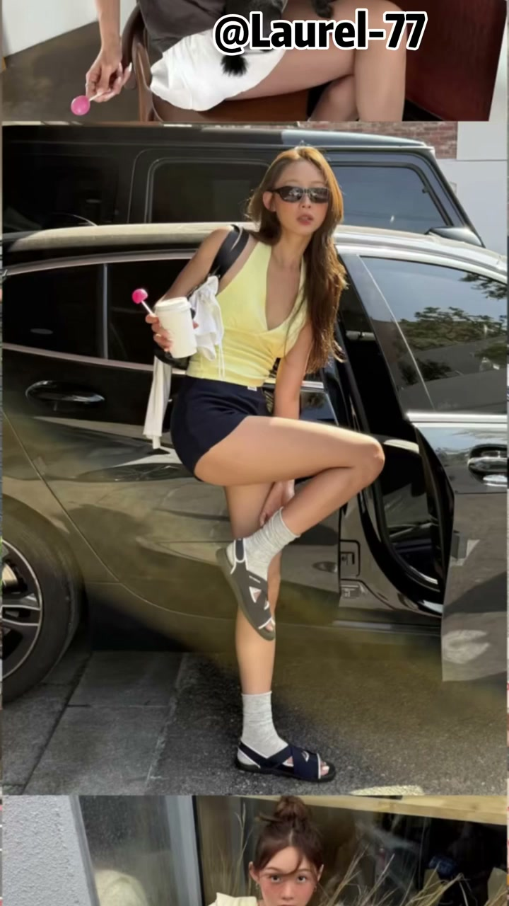
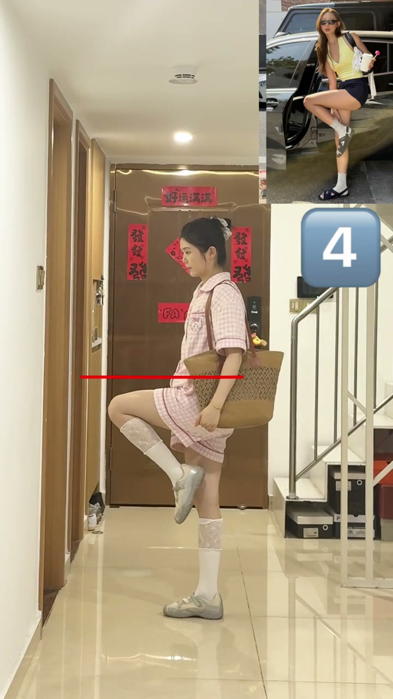
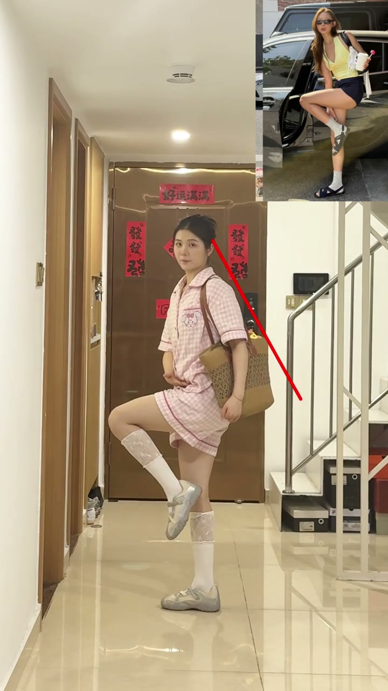
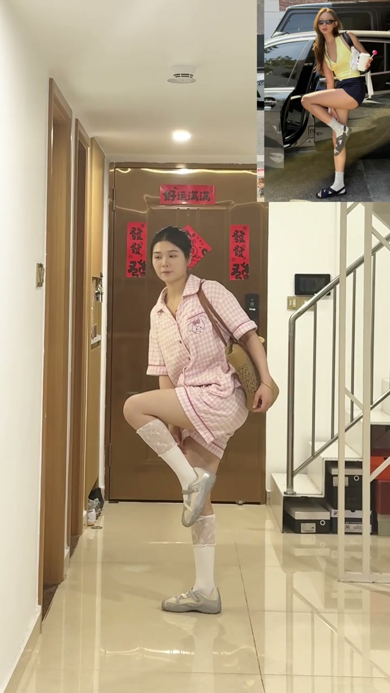
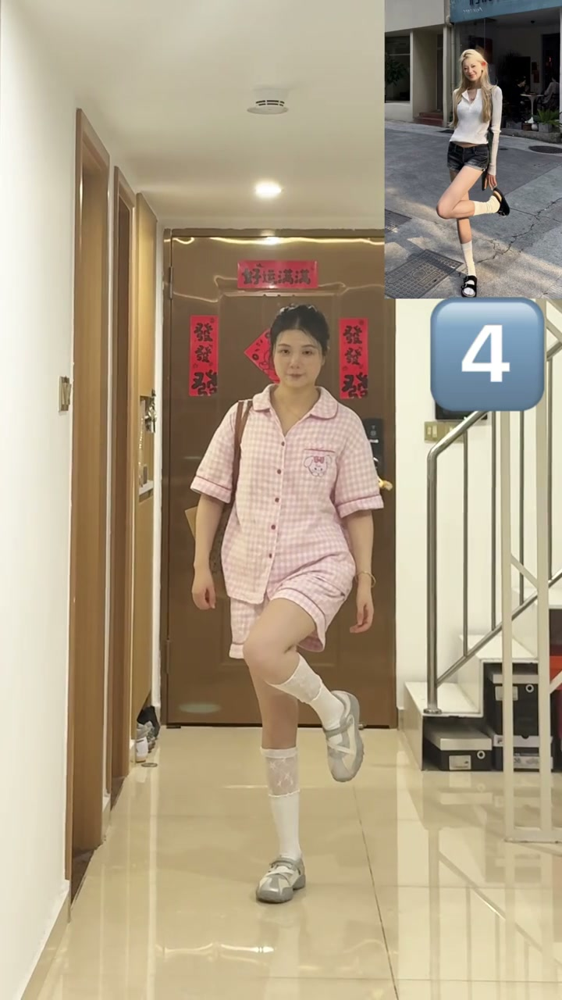
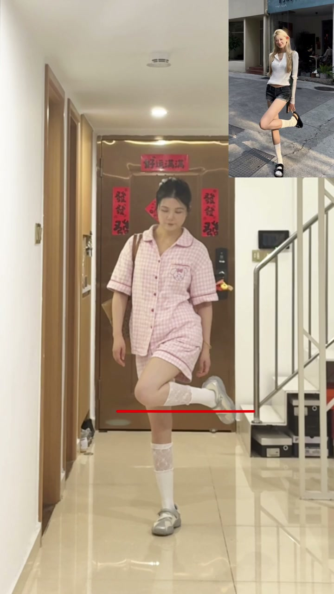

内容要点
知识结构
侧身对镜头，大腿平行地面，绷脚背。以胯为轴保持上半身直立向下折叠，手顺势摸脚踝（假装提鞋）。关键细节：两边肩膀保持一条直线，头可微歪，做成动态抓拍。
一腿直立，另一腿弯曲抬膝——膝盖要超过直立腿（不能平行）。膝盖和小腿贴紧，绷脚背，小腿尽量平行地面。胯往上顶让腿更高，手可摸脚踝/端咖啡/比耶。
一个简单的摸脚踝动作，UP 主拆出了十几个细节要求。普通人拍照的差距不在于动作本身，而在于对这些细节的敏感度——绷脚尖、膝盖交叉、胯往上顶……每个小细节都在影响最终出片效果。
图文实录
动作一：侧身站姿
UP 主开场："今天下班来练这个摸脚踝就能出片的四字腿。第一个动作先侧身对镜头，大腿尽量跟地面平行，脚背要绷起来，因为放松会显得很奇怪"。侧身+大腿平行地面+绷脚尖，三个起始要素缺一不可。

动作一：以胯为轴向下折叠
"先尝试以胯骨为重，身体保持直立往下折叠。如果可以的话，再把身体转向镜头"。UP 主强调折叠的轴心在胯关节，上半身不能弯腰驼背。折叠后可以尝试把身体转向镜头增加变化。

动作一：摸脚踝+肩膀控制
"保持这个角度背挺直，像刚刚一样往下折叠，手顺势去摸脚踝，假装在提鞋子。这里两边的肩膀尽量保持一条直线，不要向下送太多。这里头保持直立可以向下歪一点，会显得更自然"。摸脚踝时手不是刻意去够，而是自然下落。肩膀不能一高一低，头微歪比正着看镜头更自然。

动作一：动态抓拍
"这个动作最好做成动态的，然后再去抓拍"。这是本视频最重要的拍照方法论——不要摆好再拍，在折叠→摸脚踝的过程中按快门，照片才会有"正在进行"的自然感。

动作二：单腿抬膝
"第二个动作会更简单一点。一条腿直立，另一条腿膝起来，膝盖要超过另一条腿，否则两个膝盖在同一条直线上就会显得特别奇怪。膝盖和小腿之间要贴住，距离不要太大"。这个动作的核心矛盾点在膝盖——抬起来的膝盖必须"过中线"越过直立腿，但不能变成两条平行线。这个细节决定了动作是好看还是奇怪。

动作二：绷脚尖+胯上顶
"这里注意脚也是一样，一定要绷脚背，小腿不要放得太低，可以尽量跟地面保持平行。脚抬高一点会显得特别有活力。所以为了把小腿往上抬，胯也可以尽量往上顶。摆好腿部动作，手可以去比耶、端咖啡或者是摸脚踝，简单又出片"。UP 主在最后一个环节密集输出了四个要点：绷脚尖、小腿平行地面、胯上顶、手部可自由发挥。整段教学体现了从下到上的动作建构逻辑。
